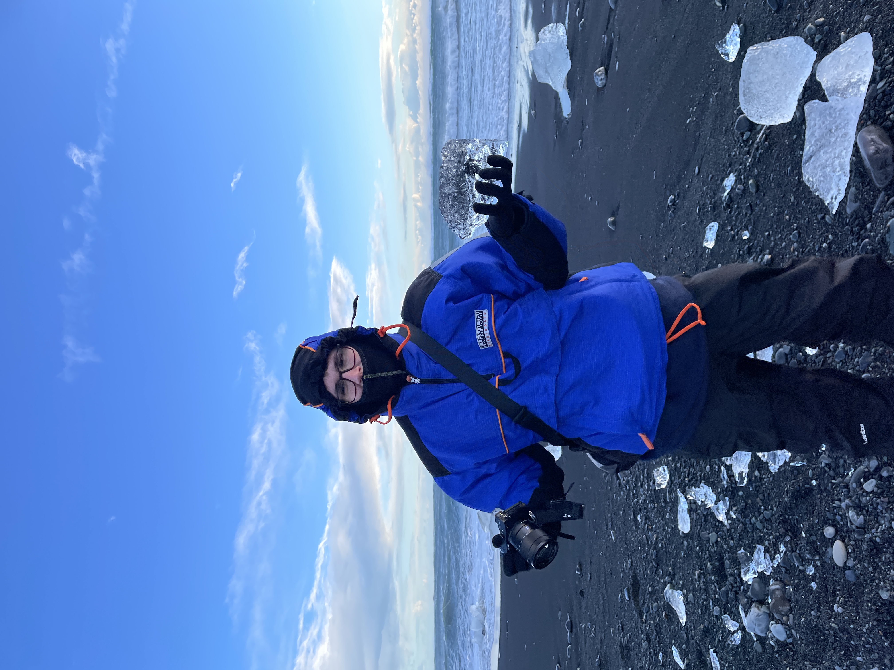

Scatti che Raccontano Storie
Momenti unici, trasformati in ricordi indelebili. Esplora il mio mondo attraverso l'obiettivo.
Scopri il PortfolioUltimi Lavori
Chi Sono
Sono un fotografo appassionato con un occhio per i dettagli e una dedizione a catturare la bellezza nel quotidiano e nei momenti speciali. La mia missione è tradurre emozioni e storie in immagini che parlano.
Leggi di più su di meHai un Progetto in Mente?
Sarei felice di discutere delle tue idee e di come possiamo collaborare. Non esitare a contattarmi!
Mettiamoci in Contatto